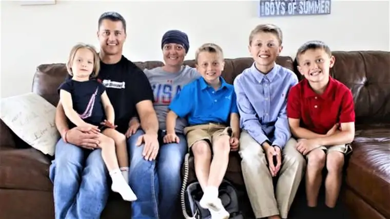

MOORHEAD — These days Andi and Mark Olsonawski measure their lives by mystery.
“It’s a mystery of God, why some people will come to know him earlier and others, later in life,” Mark says. “And why someone who is 36 gets diagnosed with brain cancer. That, too, is a mystery.”
And one the couple and their four young children have been living with, and in, since September.
Sept. 11, to be exact, the day Andi was admitted to the hospital due to some strange symptoms that had the family worried.
“It was kind of our own 9/11,” Mark recalls. “I thought of that symbol of 9/11 that day, how everything was blowing up all around us.”
They were at the Shanley High School homecoming game when the headaches Andi had been experiencing began to worsen, along with other issues. “She was tired and starting to get confused,” Mark says. “She was trying to put a text message together, and couldn’t quite do it.”
Andi started wondering if she was having a stroke. “She thought she was going to black out,” Mark says. “So we took her from the game to the emergency department.”
There, an MRI scan showed a tumor, and everything seemed to point in one inconceivable direction: grade 4 glioblastoma — brain cancer.
They sought a second opinion at Mayo Clinic in Rochester, Minn., and by Oct. 2, Andi was kneeling in prayer in a chapel at the Mayo campus, preparing for exploratory surgery.
“My heart was racing, my blood pressure was high, and I felt like I was dying,” Andi says. “I knew I needed to either have the surgery or I was going to be toast. That’s just how I felt, to be honest.”
So she called on all the heavenly help she could muster, and let go.
“I remember waking up from the surgery and being like, ‘OK God, you’ve given me a second chance. I survived that,’ ” Andi says.
She asked God to help her use it well, to glorify him. “Doctors give you small time frames. I felt like I needed to use this to be an example for people.”
Andi makes sense of it all in light of her profession. “There was a reason for all this. I’m a teacher,” Andi says. “Maybe this was the avenue I was to take to use my teaching degree.”
By all outside accounts, her desire to teach and honor God in this time she’s been given has happened.
Desiree Froslie, a close friend, says Andi’s diagnosis was “devastating and heartbreaking,” but her positivity and strong faith has brought solace to her friends.
“Even in her diagnosis, she’s often been the strong one,” Froslie says. “You almost feel guilty, because she’s usually the one supporting all of us (emotionally).”
Indeed, Andi’s recovery has gone better than expected. “She started driving again at the end of January,” Mark says. “She had some blindness on her right side after surgery, but that’s come back now.”
Andi recalls not long after her surgery sitting down with her son, Ryan, then 7, to help him with his homework, and realizing she needed to learn with him.
“It was very humbling,” she says. “I remember thinking, ‘Well, we’re doing this together.’ But it helped me relate better to my kids and what they are struggling with. I was like, ‘OK, God, I need you.’ “
But now she’s doing most of what she’d been doing before the diagnosis. Recently, Andi, a star college track and field athlete at North Dakota State University, helped coach young runners at Holy Spirit Elementary School in Fargo, where her children attend school.
“These kids try their hardest. It doesn’t matter if they win or lose,” Andi says. “They finish the race and give it their all and that inspires me.”
She also ran the 5K as part of the Fargo Marathon last weekend, along with the rest of the “Team Olsonawski” runners.
Lynn Kotrba, another friend, has watched it all in awe.
“I’ve been amazed at her perspective. Even three, five days into this, she was totally just ready to accept whatever God was giving her,” Kotrba says. “From very early on she’s been at peace with what was happening.”
There have been down times, too, Kotrba says, but Andi’s always bounced back because she’s so intent on being a model of how to walk through her cancer journey with faith.
This manifest in a special way, she says, when fifth-grade students at Holy Spirit compiled an encouragement book for Andi prior to her surgery, and the Olsonawski’s firstborn, Noel, contributed.
“(What he wrote) was purely from what was on his heart,” Kotrba says. “He wrote something to the effect of, ‘Mom, if I were God I would want you in heaven, too, so it’s OK if it’s your time to be with God.’ To me that really spoke to their faith as a family … that he had complete trust that she would be healed with God.”
The family prays for a miracle, Kotrba adds, and believes it will happen. “But I really think they’ve been given a miracle already … with how well she’s doing now.”
“It goes back to the grace of God and Jesus dying on the cross. It all goes back to the mystery,” Mark says, recalling the Scripture passage from James that admonishes believers to “Count it all joy.”
“Whether it’s good, bad or indifferent, whatever happens in life, we’ve got to keep persisting through. You don’t give up,” he says. “We have a chance to glorify God through this. That’s a great testament.”
Of the recent 5K, Andi says with so many people surrounding her, at one point she lost sight of her group.
“I figured I would lose my energy, so I just kept going and ran as far and as hard as I could,” she says. “Before I knew it I could see the finish line. And I knew I needed to give it my all to the end. It was like my old track days took over and my focus was to go as hard as I could and to finish strong.”
Small victories turn into big accomplishments, Andi adds. “Now time to focus on the next goal.”
[For the sake of having a repository for my newspaper columns and articles, I reprint them here, with permission, a week after their run date. The preceding ran in The Forum newspaper on May 28, 2016.]